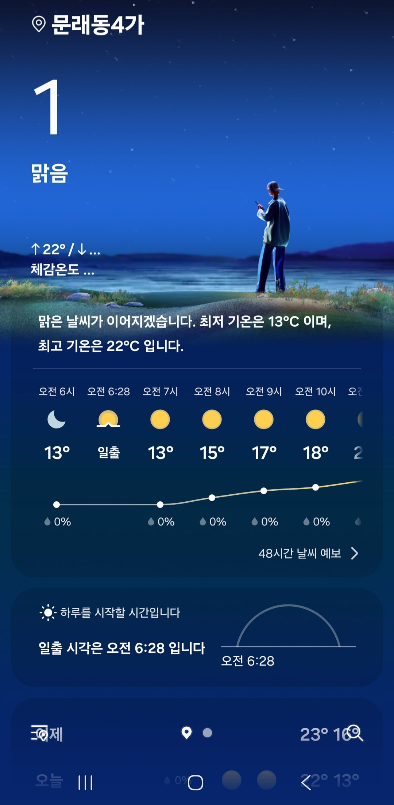

출근길에 날씨가 좀 쌀쌀해 몇돈가 보니 벌써 겨울이네
심지어 8도 뜨다가 갑자기 1도로 떨어졌어 ㄷㄷㄷ

출근길에 날씨가 좀 쌀쌀해 몇돈가 보니 벌써 겨울이네
심지어 8도 뜨다가 갑자기 1도로 떨어졌어 ㄷㄷㄷ
라면먹고자야지
13도
천안 입김나옴 5도임
뒤에 온도 단위가 없잖아
문래동4가 14도인데 왜그럼
낮에 더움
택배기사다 이 온도만 유지해달라
가끔씩 오는 콜드서지
지구새끼 10월인거 ㅈㄴ티내네
문래면 서울한복판아님?? 말안되는데 걍 버근가 ㅋㅋㅋ
선선해서 좋았는데
오늘도 반팔 입고 나옴
난 일년 내내 이 날씨면 좋겠어
동의
아침 저녁은 쌀쌀 하고
낮에는 덥고
정신을 못차리겠어
1도까진 아니지만 내일 최저온도 9도라고 나오긴 하네ㅋㅋㅋ
몇년 전 만 해도 추석 때 큰집에 인사 드리러 간다고 새벽같이 출발하면
아침 차 유리에 가을 성애 껴있고 쌀쌀해서 히터 틀고 그랬었는데
아침에 나오자마자 화들짝 놀랐음
겨울공기 특유의 그 냄새가 나서
여름에 더 덥고 겨울에 더 추워진다더만 그 영향인가..
와 반바지 입었는데 한국오자마자 깜놀했다 갈땐 졸라 더웠는데
10월 되니까 순식간에 뚝 떨어짐...
낮에는 괜찮은데 밤에는 창문 좀 닫고 자야돼
아까 새벽4시쯤 11도 더라 어휴 추워
이제 좀있으면 패딩꺼냄
한국사람들 승질 급한거 다 이유가 있다고
패딩 꺼내야겠다